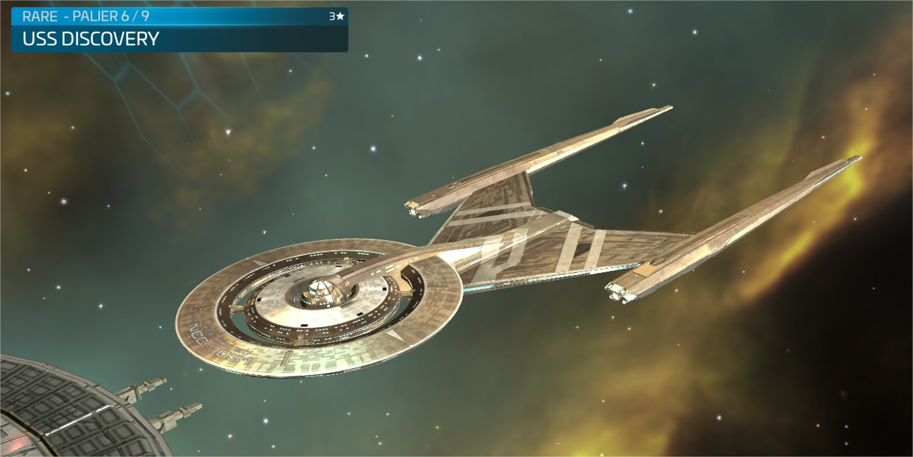
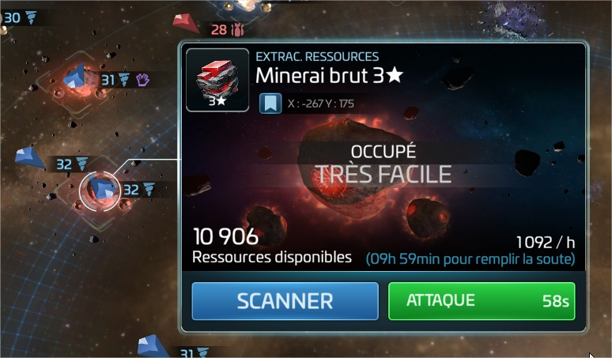
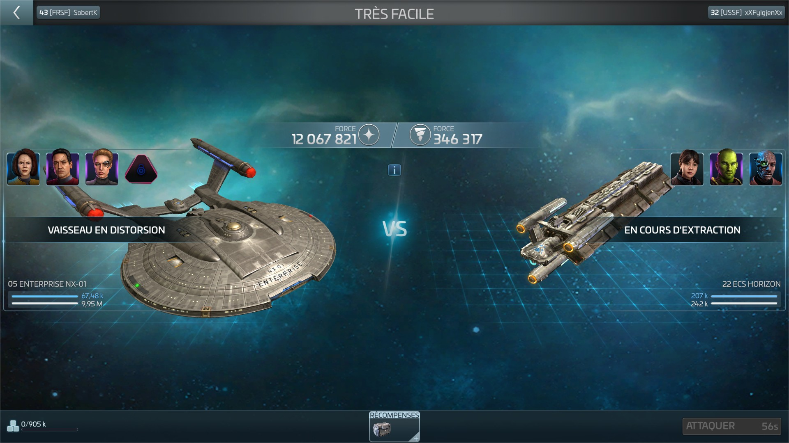
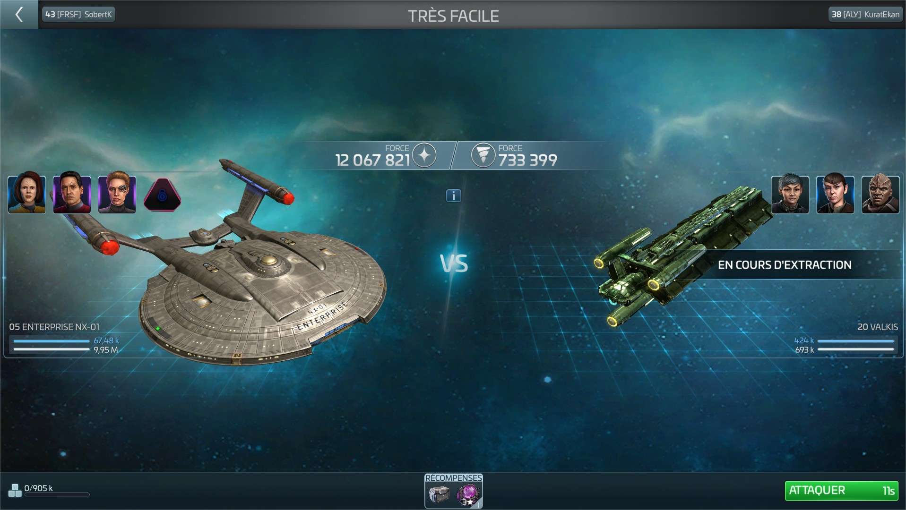

Server 105 RoE
Un guide illustré
Normal Space
Le Normal Space est défini par étant ni un espace TOKEN (il ne faut pas payer de ressources pour entrer dans le systeme), ni un espace de territoire.
Les vaisseaux pour miner sont protégés UPC. Les vaisseaux mineurs sont représentés avec l'icone de foreuse:

Il y a quelques exceptions à cette règle :
Botany Bay

Botany Bay est SEULEMENT protégé dans l'espace augmenté:

Dvor Ferengi

Dvor Ferengi est SEULEMENT protégé quand il mine du latinum brut:

Dvor Feesha

Dvor Feesha est SEULEMENT protégé quand il mine du latinum concentré:

Discovery
Discovery est SEULEMENT protégé quand il mine du mycelium:

Franklin & Franklin A


Les Franklins sont SEULEMENT protégés lorsqu'ils chassent dans l'espace essaim. Ces vaisseaux sont protégés UPC ET OPC. L'espace essaim est représenté par ces nébuleuses:

et on peut y trouver seulement ces ennemis:

OPC/UPC
Est ce que le vaisseau que je vais tuer est OPC?
La plupart du temps, vous voudrez savoir si un vaisseau minier est au dessus de sa cargaison protégé (OPC). Pour ce faire, vous devez scanner le vaisseau:
Une fois que vous aurez scanné le vaisseau, vous verrez qu'il est soit UPC (et la plupart du temps protégé):
Il peut également s'agir d'un fret surprotégé, OPC, qui est la plupart du temps prêt à être tué:
Remarquez la différence : celui de l'UPC n'a rien d'autre qu'un coffre dans les récompenses, tandis que celui de l'OPC déborde de ressources et est à saisir.
Suis-je OPC?
Pour savoir si vous êtes OPC, vous pouvez vérifier que vous ne dépassez pas votre cargaison protégée:

Ai-je été tué OPC?
Dans le rapport de combat de l'assassinat, vous pourrez voir si l'ennemi a obtenu des ressources en vous tuant:

Salopard, je me vengerai, mais seulement en suivant les RoE.
J'ai été tué en dehors des RoE, que faire?
Il existe différentes étapes pour parvenir à une bonne collaboration entre les acteurs:
- Contactez directement le joueur, ça arrive de faire une erreur
- Contactez vos amiraux pour escalader le problème